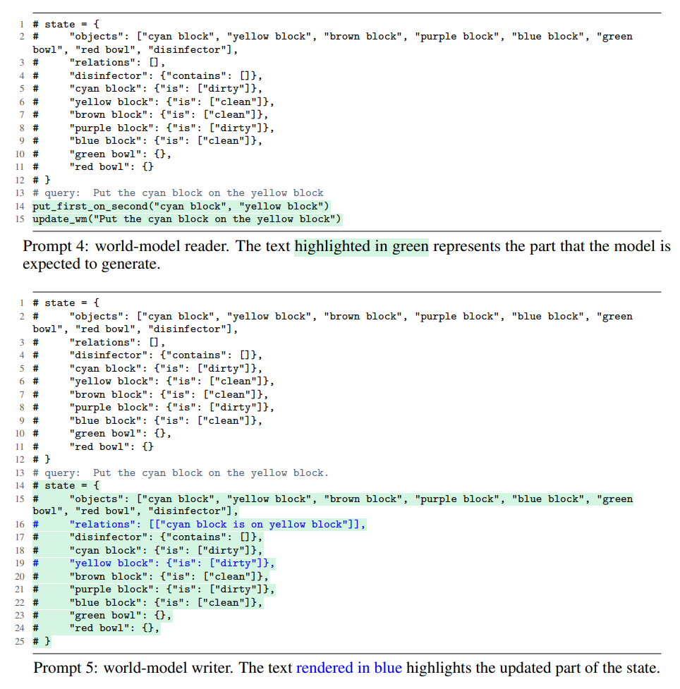
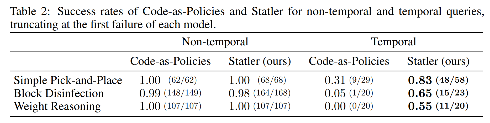
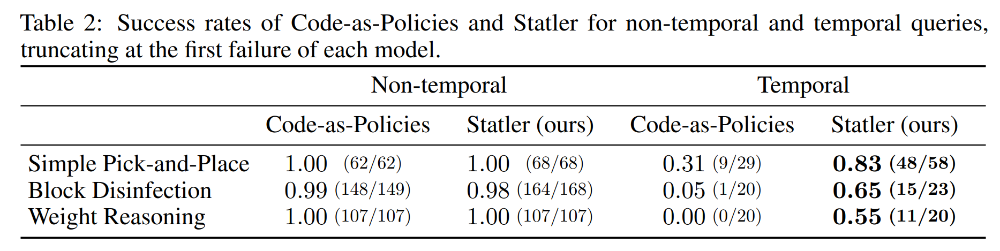
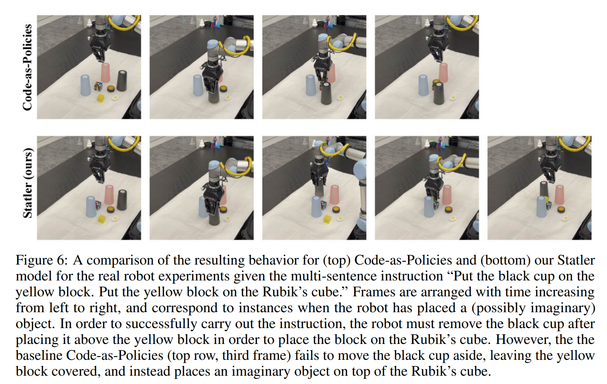
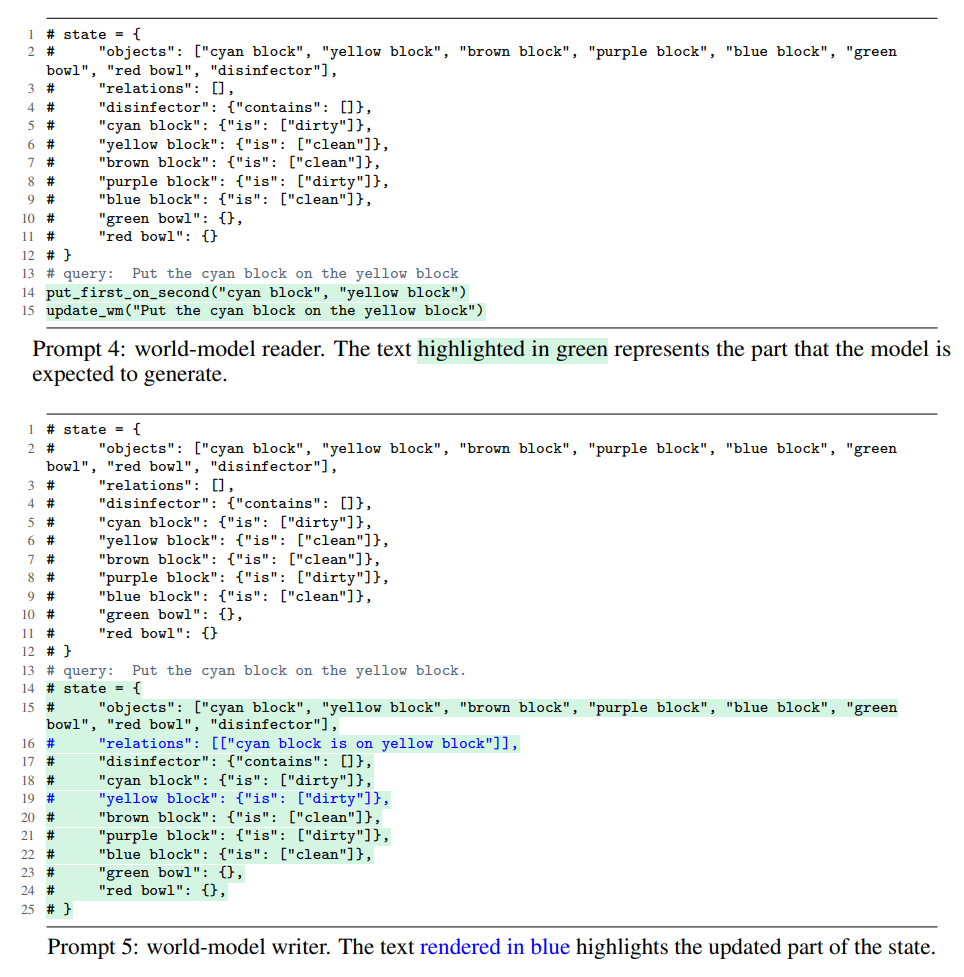
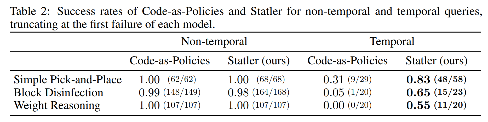
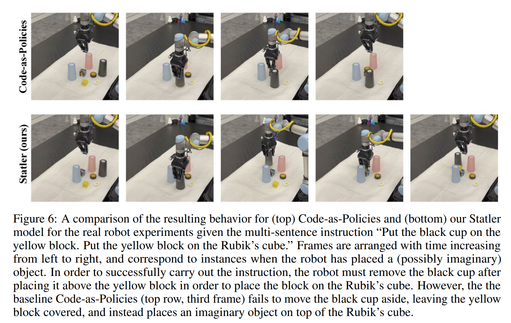

Statler: STATe-maintaining Language modelsfor Embodied Reasoning
Takuma Yoneda1, Jiading Fang1, Peng Li 2, Huanyu Zhang 3, Tianchong Jiang 3, Ben Picker 3, David Yunis 1, Shengjie Lin 1, Luzhe Sun3, Richard Xu 3, Hongyuan Mei 1, Matthew R. Walter 1
1TTI-Chicago, 2Fudan University, 3University of Chicago
CODE |PAPER
Overview
We propose Statler, a framework that endows LLMs with an external world state model accompanied by two instances of general LLMs---a world-model reader and a world-model writer---that explicitly track and anticipate world state updates. Statler improves the capacity of existing LLMs for reasoning over longer time horizons.

Motivational Example: Cups and balls
To demonstrate a situation where a state-maintaining model could be helpful, we prepare a toy game "cups and balls" to illustrate its effectiveness. The game involves three visually identical cups placed upside down on a table with a ball hidden under one of the cups. A player knows the initial location of the ball, and thereafter, the dealer swaps the location of two randomly selected cups for K rounds. When the dealer finishes swapping the cups, the player is asked to guess the location of the ball. To succeed in this game, the player needs to keep track of the location of the ball across multiple rounds of swapping so they can guess the final location.
We prepare three different approaches that attempt to
solve this task: vanilla LLM, LLM with chain-of-thought
(CoT), and a state-maintaining LLM. The vanilla
LLM (see Prompt 1) provides only the final location of the
ball at the end given the initial location and sequence of
swaps. The LLM with CoT (see Prompt 2) generates the
sequence of ball positions after the final swapping action.
This triggers the model to reason over the state transitions
(i.e., cup positions) that can help answer the final cup loca-
tion. Finally, in the state-maintaining LLM (see Prompt 3),
the model stores and updates a state representation at every
step. In contrast with the other models, our model pro-
cesses each query step by step conditioned on the previous
state representation and updates it.
 In this pilot experiment, CoT does not improve over a vanilla LLM. CoT is expected to improve reasoning by spelling out the underlying thought process, which in this case, is the series of state transitions.
CoT indeed tried to roll them out, but it failed to do it as well as expected.
We suggest this is because CoT had to impute early transitions when the LLM had already seen all the swaps and thus it was difficult to identify and focus on the right information.
The more swaps that are present, the more severe the issue becomes. Thus, the spelled out transitions are not helpful at all. Our state-maintaining model does not suffer this issue because it anticipates each state update as it happens. Since it is merely a prediction, it can be imperfect, but the state information is presented to the model right before it is needed, which we posit may contribute to the performance gain.
Next, we will present our full method---a generalized version of this simple state model---and show how effective it is in significantly more complex scenarios.
In this pilot experiment, CoT does not improve over a vanilla LLM. CoT is expected to improve reasoning by spelling out the underlying thought process, which in this case, is the series of state transitions.
CoT indeed tried to roll them out, but it failed to do it as well as expected.
We suggest this is because CoT had to impute early transitions when the LLM had already seen all the swaps and thus it was difficult to identify and focus on the right information.
The more swaps that are present, the more severe the issue becomes. Thus, the spelled out transitions are not helpful at all. Our state-maintaining model does not suffer this issue because it anticipates each state update as it happens. Since it is merely a prediction, it can be imperfect, but the state information is presented to the model right before it is needed, which we posit may contribute to the performance gain.
Next, we will present our full method---a generalized version of this simple state model---and show how effective it is in significantly more complex scenarios.
Method
Inspired by the concept of modularity, we propose to split the burden across multiple different prompted LLMs.
Precisely, we maintain a separate prompt including instructions and demonstrations for each subtask (state tracking or query responding) and then use it to elicit an LLM to perform the particular subtask.
As we will discuss shortly, our framework has a world-model reader to respond to the user query and a world-model writer to update the state representation.
Our framework is general and can in principle handle an arbitrary number of subtasks.

Compare with Vanilla LLM (code-as-policies)


Results
The simulated domains we consider include (a) pick-and-place; (b) block disinfection, where the translucent sphere around a block represents its dirtiness (this is not visible to the robot); and (c) relative weight reasoning, where the radius of the disk under each block provides an indication of its weight. These disks are rendered there only for visual aids.
 We observe that our state-maintaining LLM outperforms the vanilla LLM in all three domains in terms of (normalized) successful steps and success rate.
We observe that our state-maintaining LLM outperforms the vanilla LLM in all three domains in terms of (normalized) successful steps and success rate.
 

Real Robot Experiments
In order to validate our method on a real robot, we implement it on a UR5 arm in a similar tabletop domain as the simulated experiments. Because ground-truth position of objects is not available, unlike in simulation, we use MDETR, an open-vocabulary segmentation model, to obtain segmentation masks for objects from an RGB camera on the gripper. The following is a demo for the sequence ``Put the black cup on the yellow block. Put the yellow block on the Rubik's cube.'' In order to accomplish this successfully, the robot must remove the black cup from the yellow block to place the block on the Rubik's cube, but the vanilla approach fails. Notice in particular that the yellow block stays covered. Frames are arranged temporally from left to right, with intermediate ones taken as the robot places an object.

BibTex
Inspired by the concept of modularity, we propose to split the burden across multiple different prompted LLMs. Precisely, we maintain a separate prompt including instructions and demonstrations for each subtask (state tracking or query responding) and then use it to elicit an LLM to perform the particular subtask. As we will discuss shortly, our framework has a world-model reader to respond to the user query and a world-model writer to update the state representation. Our framework is general and can in principle handle an arbitrary number of subtasks. 
The simulated domains we consider include (a) pick-and-place; (b) block disinfection, where the translucent sphere around a block represents its dirtiness (this is not visible to the robot); and (c) relative weight reasoning, where the radius of the disk under each block provides an indication of its weight. These disks are rendered there only for visual aids.
We observe that our state-maintaining LLM outperforms the vanilla LLM in all three domains in terms of (normalized) successful steps and success rate.

In order to validate our method on a real robot, we implement it on a UR5 arm in a similar tabletop domain as the simulated experiments. Because ground-truth position of objects is not available, unlike in simulation, we use MDETR, an open-vocabulary segmentation model, to obtain segmentation masks for objects from an RGB camera on the gripper. The following is a demo for the sequence ``Put the black cup on the yellow block. Put the yellow block on the Rubik's cube.'' In order to accomplish this successfully, the robot must remove the black cup from the yellow block to place the block on the Rubik's cube, but the vanilla approach fails. Notice in particular that the yellow block stays covered. Frames are arranged temporally from left to right, with intermediate ones taken as the robot places an object. 